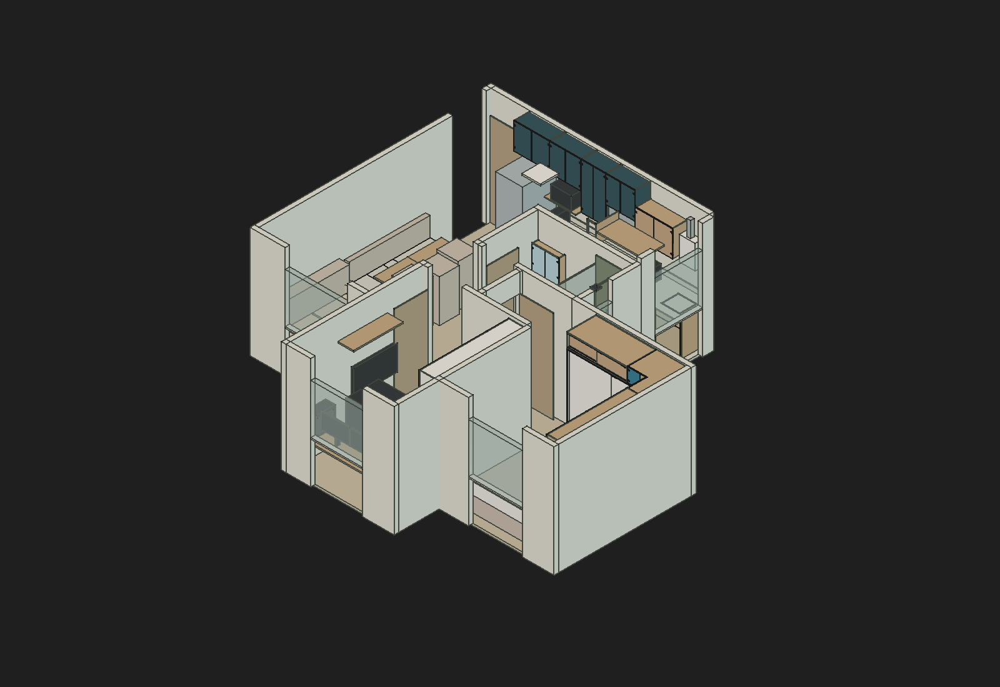
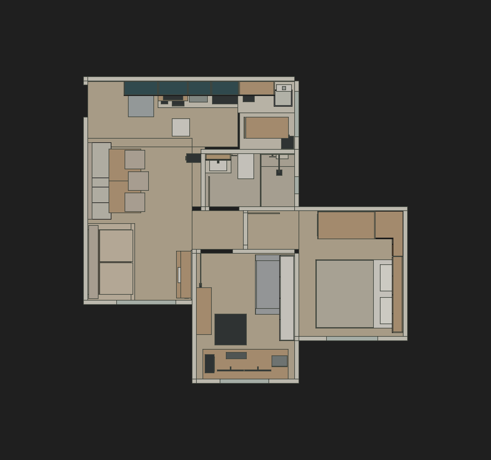
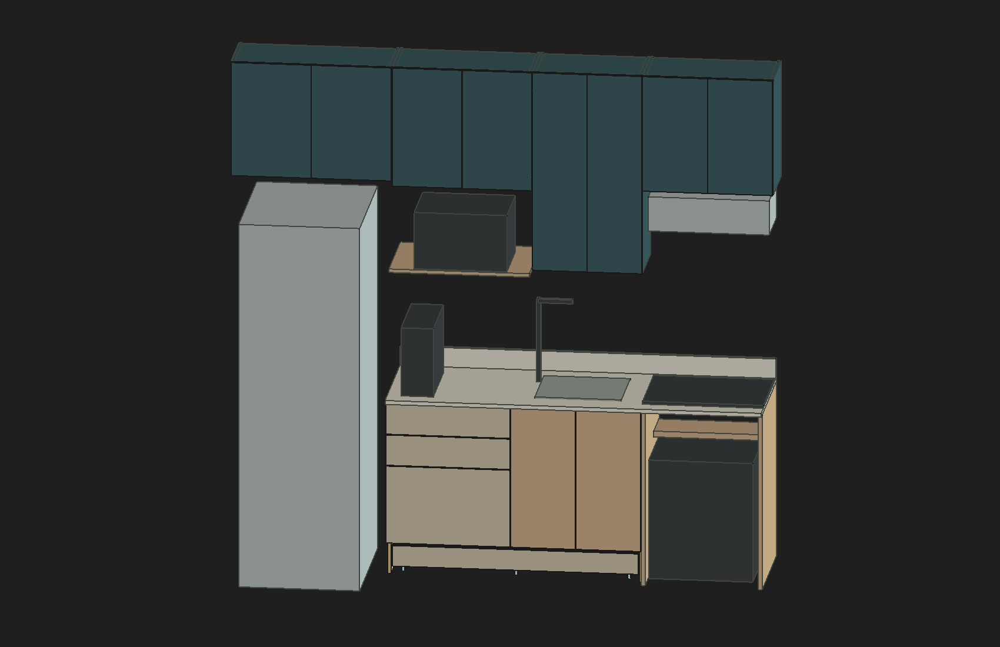
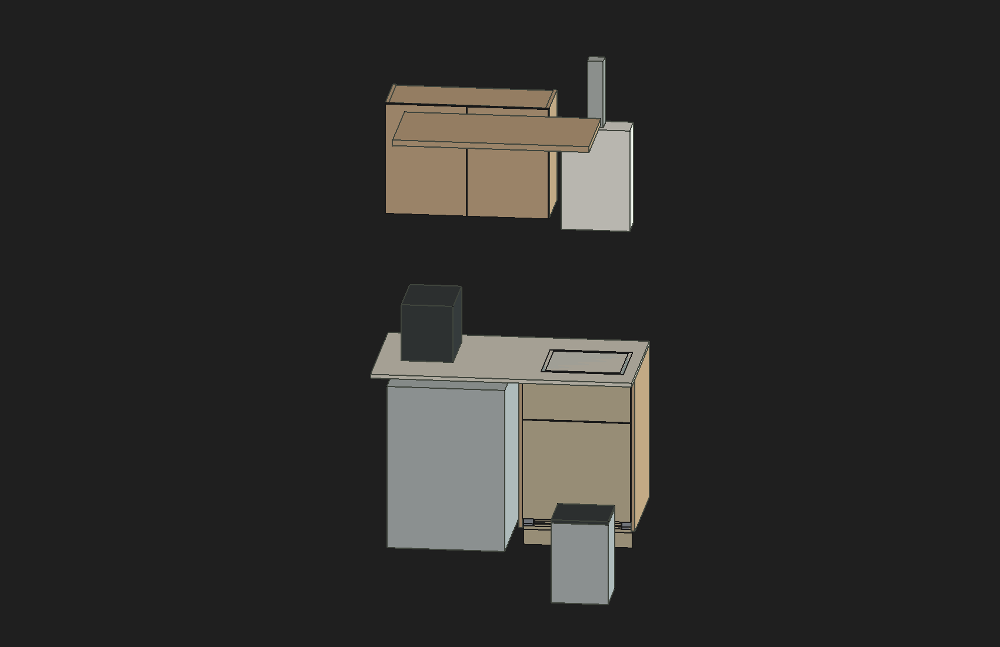
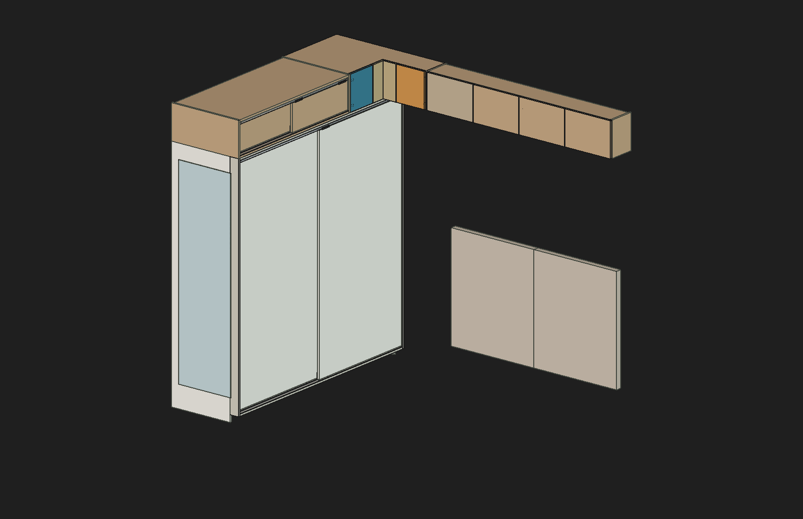
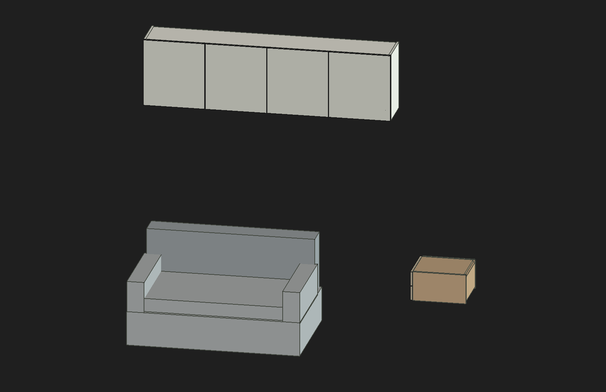
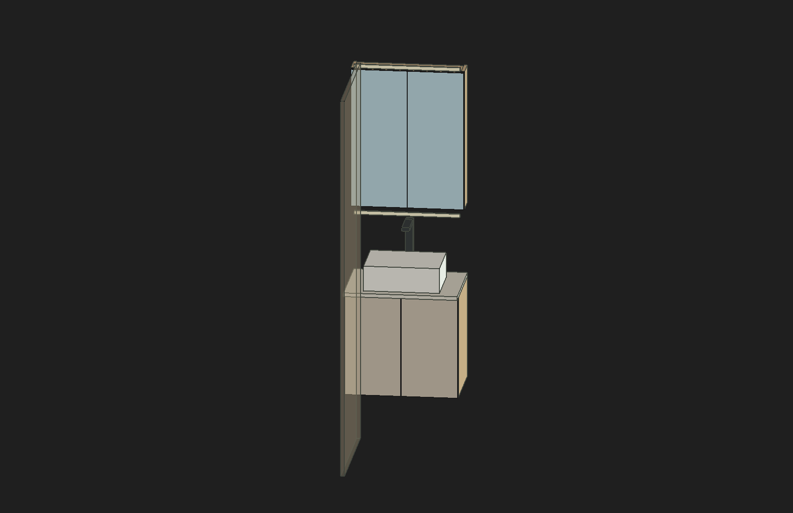
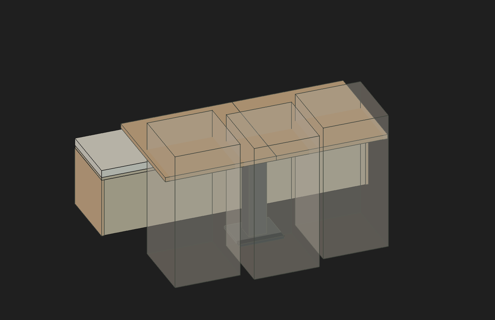

Revisão solicitada por Elias · 14/10/2026 18:10 · São PauloO que ainda precisa ser corrigido no projeto
A R28 está consistente nas cotas de corpo dos 20 módulos comparadas às planilhas. A inspeção visual e documental não confirmou um novo deslocamento incorreto de móvel. As prioridades de correção concentram-se na instalação dos equipamentos, no detalhamento comercial das ferragens e nas condições reais de montagem.
20módulos comparados às planilhas
925sólidos atuais inventariados
8vistas inspecionadas
0divergências nos parâmetros comparados
Conclusão: estudo CAD organizado e verificável, com pendências que impedem tratá-lo como projeto executivo liberado. As medidas abaixo são do modelo. Não substituem medidas físicas, tolerâncias, resistência, lista de corte ou aprovação de instalação.
Pendências e ação necessária
Os itens abaixo consolidam achados conhecidos conferidos contra a versão atual. Não são apresentados como doze erros novos descobertos nesta rodada.
Avanço autônomo posterior: orçamento de massa das nove gavetas, incluindo as duas bandejas da G2 e correção da distinção entre carga útil e margem restante. G3: madeira 15,63 kg; G2 com bandejas: 8,75 kg no cenário 900 kg/m³. Pesos reais, acessórios, conteúdo, capacidade comercial e fixação ainda pendentes; CAD preservado.
Alta · Conflito documental demonstrado no CAD
01. Aquecedor E21: faixa lateral insuficiente
Há 70 e 50 mm laterais, diante de 200 mm recomendados em cada lado. A faixa de 470 mm não acomoda corpo de 350 mm mais duas reservas de 200 mm: faltam 280 mm nessa configuração.
O que corrigir ou fechar: Compatibilizar a posição do aquecedor, aéreo, varal e instalações com as referências reais e profissional responsável. Corrigir depois a representação: corpo CAD 530 mm versus 483 mm no manual; duto quadrado 80 versus Ø60. Não reduzir esses gabaritos antes de localizar os datums, conexões e terminação. Montagem sobre madeira não é admitida pelo manual.
Evidência técnica registradaAlta · Escolha expressa preservada; requisito não atendido no modelo
02. Micro-ondas ME23P: folga superior divergente
Topo do aparelho Z1840 e base do aéreo B Z1940: 100 mm. A referência do manual é 300 mm; a reserva invade o aéreo em 200 mm.
O que corrigir ou fechar: Resolver a compatibilização da instalação antes de executar o nicho. Os 100 mm foram escolhidos por Elias e não foram alterados nesta revisão; essa escolha não demonstra dispensa do manual. Laterais abertas não foram usadas para compensar a diferença.
Evidência técnica registradaAlta · O modelo ainda não representa um caminho de ar contínuo
03. Depurador Suggar: retorno de ar incompleto
Canal 196 × 178 mm entre Z1976 e 2532, limitado pela base inteira Z1958–1976 e tampo inteiro Z2532–2550. O topo do aparelho Z1916 fica 42 mm abaixo da base do módulo.
O que corrigir ou fechar: Detalhar ligação, abertura de entrada e saída, retorno e fixação conforme o aparelho escolhido. Conferir acesso ao filtro e distância à cocção. A largura interna de 614 mm, favorável ao nicho de 603 mm, não resolve ventilação. Não fazer recortes por posição inferida.
Evidência técnica registradaAlta · Dimensões de instalação e instruções ainda incompatibilizadas
04. Forno Venax / cooktop KE4GC / LG
O envelope do forno termina 15 mm antes da parede; isso não representa os 50 mm do cenário documental. O manual Venax traz 30 mm laterais / 50 mm atrás e também 100 mm em toda a volta. A distância de 200 mm entre fundo do cooktop e topo do forno depende do ponto inferior instalado ainda desconhecido.
O que corrigir ou fechar: Obter corte cotado do KE4GC, referências do corpo/frente/apoio do forno e resolver a divergência do manual. Detalhar ventilação, gás, apoio e recortes. A LG exige isolamento 850 × 600 mm com alumínio voltado ao forno quando a proximidade for inevitável; a lateral de MDF não comprova essa solução. A altura externa de 131 mm do cooktop não deve ser aplicada como profundidade instalada.
Evidência técnica registradaAntes da execução · Recorte e produto reais não modelados
05. Tanque, bancada e hidráulica
O tanque e seu vazio útil atravessam a bancada indicada como “a recortar”. A hidráulica do gabinete e do cesto é representada por reservas.
O que corrigir ou fechar: Definir tanque/cuba reais, gabarito de recorte, apoios, vedação e sifões/conexões antes de detalhar a pedra. Não remover interseções com um corte arbitrário.
Evidência técnica registradaAntes da execução · Movimentos geométricos não equivalem à montagem comercial
06. Dobradiças, batentes e gavetas
86° é limite de estudo: não comprova o limitador 70T3553. Há contatos internos nas fontes STEP de dobradiças e MOVENTO cuja causa continua desconhecida. Guias MOVENTO são sólidos estáticos.
O que corrigir ou fechar: Confirmar montagem comercial, batente, parafusos, canecos, apoios duplos e tolerâncias. Fechar peso da caixa + frente + conteúdo para a classe candidata de 40 kg. LW−42 é largura interna. Manter as fontes oficiais e não desbastar ou deslocar peças para apagar contatos.
Evidência técnica registradaAntes da execução · Reservas de ferragens, sem STEP oficial
07. Portas de correr do roupeiro e maleiro
Roupeiro: duas folhas 995 × 1999 mm, curso 965 mm. Maleiro: duas folhas 670 × 237 mm, curso 640 mm. Aplicação muito baixa e larga do maleiro não está comprovada.
O que corrigir ou fechar: Confirmar trilhos, carros, retenção antidesencaixe, batentes, apoio e carga do sistema comum candidato. Substituir as reservas pelo desenho comercial cotado quando disponível; não comprar com base apenas nas caixas de reserva.
Evidência técnica registradaAntes da execução · Produto e capacidade ainda não definidos
08. Gaveta baixa sobre rodas
Interno 1187 × 406 × 88 mm; frente 106 mm, base 180 mm e recuo 80 mm preservados. Seis rodízios são gabaritos. Só a madeira pesa aproximadamente 12,92–15,50 kg nos cenários usados.
O que corrigir ou fechar: Confirmar rodízios de silicone, altura real, capacidade, fixação, piso, guias e retirada. Não distribuir a carga por seis como garantia de apoio simultâneo. Preservar cabos fixos com cabeças retiradas; não trocar por MOVENTO ou cabos retráteis.
Evidência técnica registradaAntes da execução · Geometria proposta; ferragens e esforço não homologados
09. Banco e cesto: estrutura e uso
Banco 1800 × 550 mm, topo 470; folha 800 × 350 × 70 preservada. Último setor propõe remover almofada, ocupar os outros três setores fechados e recuar a folha 24 mm. Cesto mantém giro de 55° e saco removível.
O que corrigir ou fechar: Dimensionar apoios, fixações, retenção e cargas; conferir pega/manuseio. Na manutenção do cesto, estacionar a Loop com controle 650 antes de retirar a armação, e devolvê-la após recompor e fechar. A posição temporária tem percurso geométrico conferido, mas não valida a operação por uma pessoa.
Evidência técnica registradaAntes da execução · Conflito de uso conhecido e levantamento pendente
10. Banheiro: entrada, espelhos e gabinete
A folha ideal de entrada, 700 mm não medidos, interfere no gabinete inferior aberto. A condição de uso estudada exige fechar a entrada antes de abrir esse gabinete. Vidros, adesivos e carga dos espelhos são candidatos.
O que corrigir ou fechar: Conferir a situação física na etapa de levantamento e preservar a porta original. Detalhar vidro/adesivo, prateleiras/pinos, hidráulica e fixação. Não há intertravamento; a condição de uso não elimina fisicamente o conflito. Não foi solicitado novamente a Elias o dado indisponível.
Evidência técnica registradaAntes da execução · Folga nominal proposta, sem levantamento acabado
11. Teto e fixação dos aéreos
Escritório: base 1900, topo 2450, sob teto de estudo 2470; folga nominal 20 mm. Caixa de 2000 × 350 × 550 e espaço interno foram preservados. Cozinha 20 mm e quarto 30 mm nas referências de estudo.
O que corrigir ou fechar: Conferir teto acabado, irregularidades, montagem, suportes e capacidade da parede. Os 20 mm não são mínimo universal nem margem garantida. Não encurtar a caixa para compensar informação ausente.
Evidência técnica registradaRepresentação · Interseções de gabaritos não resolvidas por geometria real
12. Mesa/cadeiras e enchimento/box
Dez contatos mesa × Lina envolvem caixas cheias que ocupam os vazios das cadeiras reais. Três contatos enchimento × box dependem de altura, vidro e perfis não medidos.
O que corrigir ou fechar: Trocar pelos contornos reais quando houver dados suficientes. Manter posição aprovada das cadeiras e não apagar o enchimento para produzir uma auditoria sem contatos. Esses registros não permitem afirmar colisão física nem ausência dela.
Evidência técnica registrada
Cotas conferidas no arquivo
Unidade: mm. C × P × A corresponde às propriedades de corpo; Z é o intervalo do conjunto de sólidos adotados em posição salva, podendo incluir frente, ferragem ou apoio. Uma propriedade de corpo diferente do envelope completo não é, por si só, erro.
Inventário completo dos 925 sólidos em CSV · Dimensões nativas, posições e expressões em JSON · Cálculo das folgas de instalação
Conferência visual da revisão vigente
As seis vistas por ambiente são recortes de seleção, sem paredes e objetos de outros ambientes. Ausência de um objeto numa vista isolada não significa exclusão do apartamento. Todas mostram a posição salva; não foi executada nova sequência de movimentos. Transparências são apenas de cópias visuais.

Apartamento completo. Vista nativa da R28, na implantação espelhada vigente. Não é levantamento da unidade.
Planta atual. Sofá na posição diária corrigida; fontes históricas não substituem resultados atuais.
Cozinha. 290 peças atuais isoladas para leitura. Equipamentos são volumes de referência; veja itens 02–04.
Lavanderia. 69 peças atuais. Folgas laterais do E21 e caminho do duto permanecem pendentes; tanque ainda exige recorte real.
Quarto. 229 peças atuais. Canto simples, roupeiro/maleiro, cabeceira dividida e espelho lateral preservados.
Escritório. 95 peças atuais. Aéreo com quatro portas, base 1900 e topo 2450; sem diminuição da caixa.
Banheiro. 84 peças atuais. Entrada ideal mostrada translúcida somente na cópia visual. Gabinetes fechados; não é um novo teste de abertura.
Banco e mesa. 53 peças atuais. Caixas das cadeiras Lina translúcidas somente nesta vista para mostrar o banco; não representam os vazios reais das cadeiras.
Escopo, resultados e limites
Leitura nova da R28 aberta: 5.899 objetos, seleção de 925 sólidos atuais, comparação das três cotas de corpo dos 20 módulos com seus valores de planilha e inventário anterior. Nenhuma divergência nesses campos; nenhuma envoltória com dimensão não positiva ou coordenada não finita. As dimensões nativas disponíveis e expressões dos 925 sólidos foram exportadas, mas não foram homologadas individualmente como cotas de fabricação ou furos comerciais.
Revisão documental cruzou decisões vigentes, equipamentos R17, fontes de cocção, auditorias de implantação e movimentos, controles R28 e revisões de montagem. Os ensaios anteriores foram aproveitados com seus limites: arquitetura de 27 paredes e nove pisos, sem teto físico sólido; colisões do sofá corrigidas na R24, espelho/cabeceira na R25, dois perfis nativos na R27. Não houve repetição de varredura global, booleanas ou testes antigos para somar contagens.
A folga de 20 mm da R28 é proposta sob teto hipotético; seus testes de descida e portas são evidência limitada ao escopo registrado. Amostras de posições não comprovam continuidade, qualquer combinação simultânea, pessoas, tolerâncias, carga ou execução comercial dos mecanismos.
As vistas gerais foram capturadas no documento atual. Os detalhes usaram cópia visual descartada após a inspeção; transformações dessas cópias não foram usadas como teste de validade geométrica. Uma falha de preparação da câmera (“No SWIG wrapped library loaded”) foi resolvida carregando pivy.coin; não alterou o projeto. O arquivo canônico não foi salvo ou modificado, a câmera original foi restaurada e somente a R28 ficou aberta, isTouched=False.
Fechamento da sessão · Achados estruturados · Guia vigente dos 46 acessos · Entrega atual e histórico
Arquivo: Guedala_Park_R28_Folga_Teto_Proposta.FCStd
SHA-256 preservado: 2b623c09beddb4d01b581f474468ed707b9b41d8b9dc7cddc1312474fd5ecc99.
Este relatório responde à revisão solicitada agora. A consulta suportada do aplicativo não expôs o modelo efetivo deste turno; o relatório não constitui comprovação da revisão final Astra reservada para 18h30. Não houve acesso a transcrições ou metadados internos para tentar comprovar o modelo.